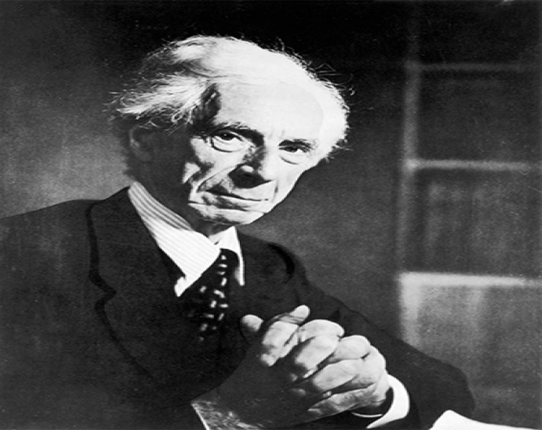

Empirismo
Es una escuela filosófica que piensa a la experiencia como punto de partida y fundamento todo conocimiento posible.
Referencias
El escepticismo es una teoría del conocimiento que afirma la inexistencia de la verdad, o que, si existe, el ser humano es incapaz de conocerla. La palabra "escéptico" viene del griego skeptikoi (de skeptesthai que en griego significa examinar o investigar). La etimología de esta palabra indica en su significado: "quien investiga". Los filósofos escépticos no creen en una verdad objetiva, porque todo es subjetivo, dependiendo del sujeto que estudia y no del objeto estudiado.
El dogmatismo es una posición filosófica respecto a la posibilidad del conocimiento. Hace derivar el pensamiento del ser, presupone la supremacía del objeto respecto al sujeto y la capacidad del sujeto para recibir, sin distorsiones, la verdad del objeto tal como es en sí mismo y de forma independiente al sujeto.
Existen las verdades absolutas e incuestionables, llamados dogmas.
Propio del conocimiento no científico.
Escaso rigor y cerrado a la falsabilidad.
Dogmatismo es una posición contraria al conocimiento científico.
Características:
El relativismo es una posición filosófica que niega la existencia de verdades absolutas. En otras palabras, considera el saber como incompleto y sostiene que el conocimiento humano es relativo, subjetivo e incapaz de ser objetivo, ya que está influenciado por la historia y otras ideas preconcebidas.
Jhon Loke, es considerado padre del "Liberalismo Clásico", uno de los primeros empiristas británicos. Influido por las ideas de Francis Bacon, realizó una importante contribución a la teoría del contrato social.
Regístrate y colabora con nuestra web:
Michael Foucault
El saber es el único espacio de libertad del ser.

Bertrand Russel
Lo que los hombres realmente quieren no es el conocimiento sino la certidumbre
Jean-Paul Sartre
Sólo la existencia puede proyectarse fácticamente en el mundo por la propia decisión del hombre, todo depende de él

Martin Heidegger
Lo más interesante en nuestro tiempo de reflexión es que todavía no estamos pensando.